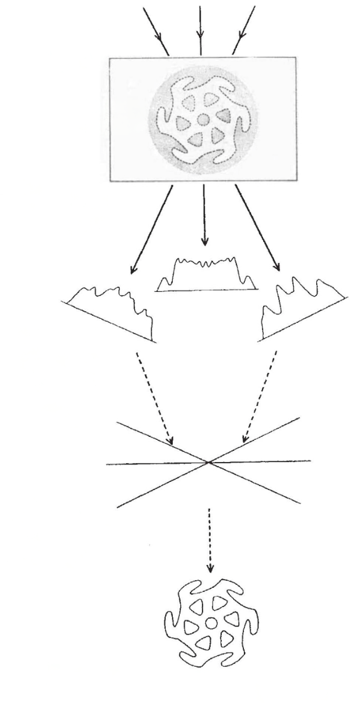
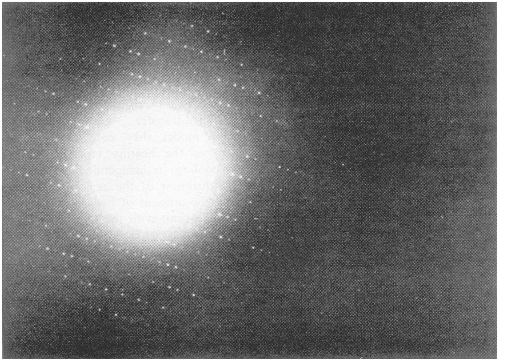
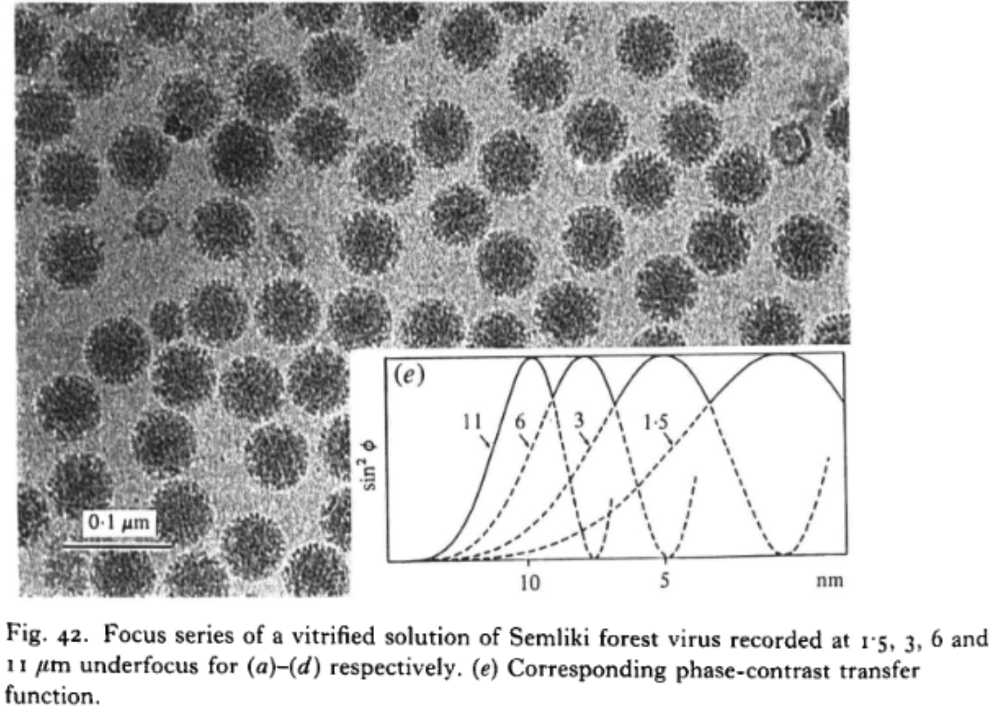
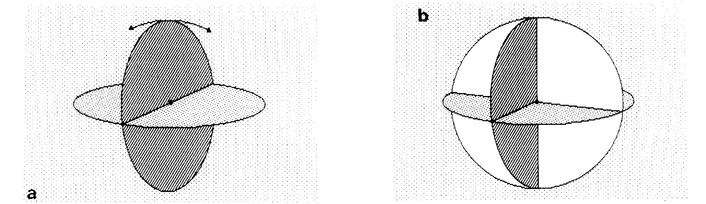
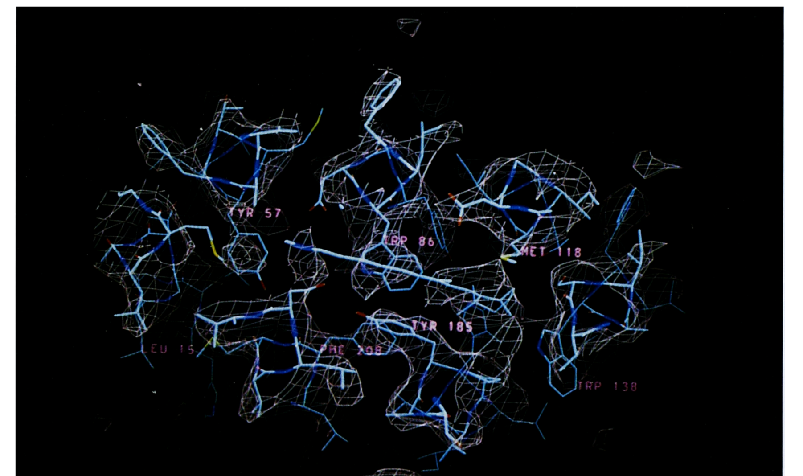
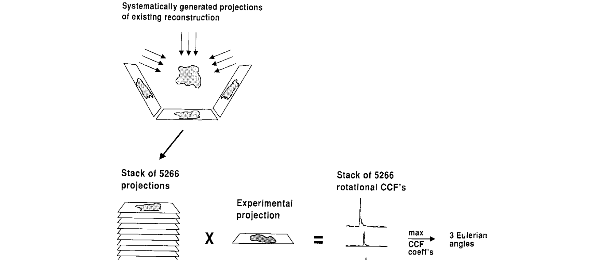

슬라이드 5 타임라인 레이아웃 비교
슬라이드 5 (1968-1994) 기준 — 실제 이미지 사용
옵션 A: 3+3 분할
슬라이드당 3개 사건 — 이미지 크게, 텍스트 여유있게 (슬라이드 5a)
From Blobs to High Resolution (1968–1982)
Foundational milestones — Part 1
1968
First 3D reconstruction
DeRosier & Klug reconstruct T4 phage tail from EM images using Fourier methods — proving 3D structures can be computed from 2D projections

1974
Birth of cryo-EM
Taylor & Glaeser image frozen-hydrated catalase crystals, proving native structure can be preserved in the electron beam

1982
Vitrification
Dubochet et al. achieve plunge-freezing in liquid ethane, creating vitreous (amorphous) ice around biological specimens — Nobel Prize 2017

DeRosier & Klug, Nature (1968) · Taylor & Glaeser, Science (1974) · Dubochet et al., J Mol Biol (1988)
옵션 B: 단일 컬럼 + 우측 이미지
지그재그 제거, 왼쪽 타임라인 + 오른쪽 이미지 — 6개 전부 한 슬라이드
From Blobs to High Resolution (1968–1994)
Foundational milestones
1968First 3D reconstruction
DeRosier & Klug reconstruct T4 phage tail using Fourier methods
1974Birth of cryo-EM
Taylor & Glaeser image frozen-hydrated catalase crystals
1982Vitrification
Dubochet et al. plunge-freezing in liquid ethane — vitreous ice
1987Angular reconstitution
van Heel + Frank: methods for random particle orientations

1990First atomic EM structure
Henderson: bacteriorhodopsin at 3.5 Å by electron crystallography

1994Projection matching
Penczek, Frank: iterative projection matching for 3D refinement

DeRosier & Klug, Nature (1968) · Taylor & Glaeser, Science (1974) · Dubochet et al., J Mol Biol (1988) · Henderson et al., J Mol Biol (1990)
옵션 C: 텍스트 타임라인 + 이미지 슬라이드
타임라인은 텍스트만 깔끔하게 (슬라이드 5)
From Blobs to High Resolution (1968–1994)
Foundational milestones
1968
First 3D reconstruction
DeRosier & Klug reconstruct T4 phage tail from EM images using Fourier methods — proving 3D structures can be computed from 2D projections
1974
Birth of cryo-EM
Taylor & Glaeser image frozen-hydrated catalase crystals, proving native structure can be preserved in the electron beam
1982
Vitrification — Nobel Prize 2017
Dubochet et al. achieve plunge-freezing in liquid ethane, creating vitreous (amorphous) ice around biological specimens
1987
Angular reconstitution
van Heel develops method for random particle orientations; Frank et al. introduce random conical tilt reconstruction
1990
First atomic EM structure
Henderson et al. solve bacteriorhodopsin at 3.5 Å by electron crystallography — Nobel Prize 2017
1994
Projection matching
Penczek, Frank et al. develop iterative projection matching for 3D refinement of single-particle structures
DeRosier & Klug, Nature (1968) · Taylor & Glaeser, Science (1974) · Dubochet et al., J Mol Biol (1988) · Henderson et al., J Mol Biol (1990)
핵심 이미지는 별도 슬라이드 (슬라이드 5-img)
Key Images: Early Cryo-EM (1968–1994)
Visual milestones from the foundational era
1968 Fourier reconstruction
1990 Bacteriorhodopsin 3.5 Å
Images from original publications
옵션 D: 하이브리드 (3+3, 주인공 강조)
슬라이드당 3개 사건, 핵심 1개만 크게 강조 (슬라이드 5a)
From Blobs to High Resolution (1968–1982)
Foundational milestones — Part 1
1968
First 3D reconstruction
— DeRosier & Klug: T4 phage tail
1974
Birth of cryo-EM
— Taylor & Glaeser: frozen catalase
1982
Vitrification — The Breakthrough
Dubochet et al. achieve plunge-freezing in liquid ethane, creating vitreous (amorphous) ice around biological specimens. This single innovation made it possible to image proteins in their native state — and earned the 2017 Nobel Prize in Chemistry.
DeRosier & Klug, Nature (1968) · Taylor & Glaeser, Science (1974) · Dubochet et al., J Mol Biol (1988)
옵션 E: 가로 타임라인 (원자료 스타일)
시간 흐름을 좌→우로, 이미지와 설명을 위/아래에 교대 배치 — 6개 한 슬라이드
From Blobs to High Resolution (1968–1994)
Foundational milestones
First 3D recon
DeRosier & Klug
Vitrification
Dubochet et al.
Atomic EM
Henderson 3.5 Å
1968
1974
1982
1987
1990
1994
Birth of cryo-EM
Taylor & Glaeser
Angular recon
van Heel + Frank
Projection match
Penczek, Frank
DeRosier & Klug, Nature (1968) · Taylor & Glaeser, Science (1974) · Dubochet et al., J Mol Biol (1988) · Henderson et al., J Mol Biol (1990)
가로 3+3 분할 버전 (옵션 E + A 결합: 3개씩 나누어 가로 타임라인)
From Blobs to High Resolution (1968–1982)
Foundational milestones — Part 1
1968
First 3D reconstruction
DeRosier & Klug reconstruct T4 phage tail using Fourier methods
→
1974
Birth of cryo-EM
Taylor & Glaeser image frozen-hydrated catalase crystals
→
1982
Vitrification
Dubochet et al. plunge-freezing in liquid ethane — Nobel 2017
DeRosier & Klug, Nature (1968) · Taylor & Glaeser, Science (1974) · Dubochet et al., J Mol Biol (1988)